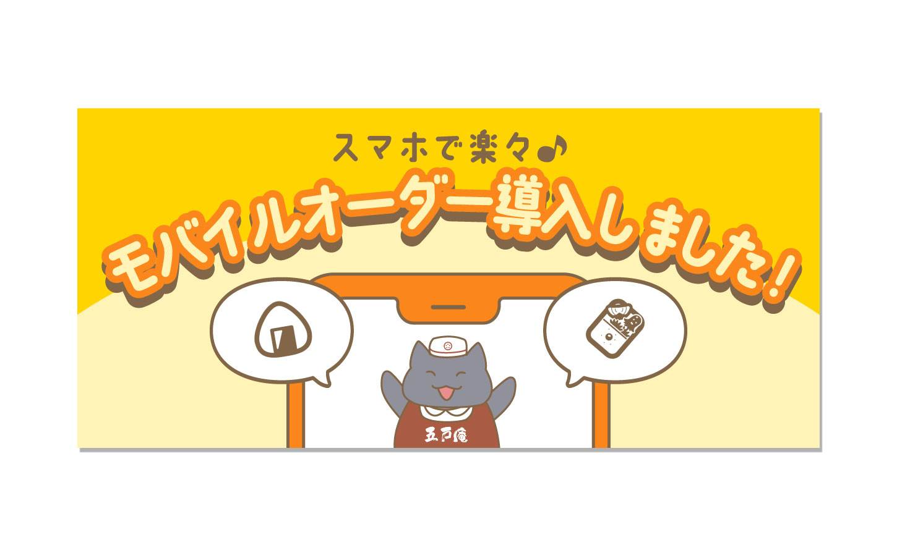

ABOUT
江藤みのり
神奈川県横浜市出身。
四年制大学の法学部を卒業後、IT系の企業にSEとして入社。
以前から興味のあったクリエイティブ系の仕事に就きたいと思い、退職後に就労移行支援事業所を利用し、Webデザイン、グラフィックデザインを学ぶ。
趣味は動物園巡り、喫茶店巡り、美術館巡り。
WORKS
Webサイトデザイン
五戸庵
公式サイト
（架空のお弁当屋さんのサイト）
説明
架空のお弁当屋さんからリニューアルの依頼を受けたという想定で、Webサイトリニューアルを行いました。
五戸庵公式サイト
制作期間
企画提案・ワイヤーフレーム：10日
デザイン：7日
コーディング：1ヶ月
担当部分
企画・提案（シミュレーション）/Webサイトデザイン/キャラクターデザイン/バナーデザイン/コーディング
使用ツール
Illustrator/Photoshop/Visual Studio Code
イメージ・ターゲット
初めてのWebサイトデザイン・制作であったため、シンプルで飲食店らしいデザインにしようと考えました。
そのため基本的に暖色を使用して暖かみを持たせています。
想定するターゲットは、独り暮らしの会社員・ファミリー層としました。
江藤みのり
ポートフォリオサイト
（このサイト）
説明
私自身のポートフォリオサイトです。色のコントラストなどを意識しながら自分の好みを詰め込みました。
制作期間
企画・ワイヤーフレーム：1日
デザイン：4日
コーディング：11日
担当部分
企画/Webサイトデザイン/写真レタッチ/コーディング
使用ツール
Illustrator/Photoshop/Visual Studio Code
イメージ・ターゲット
ポートフォリオとして使える、シンプルな作りを意識しつつ、自分の好きな色、好きな雰囲気を詰め込みました。
バナー背景は同じ形のパーツの中に少しだけ形の違う私の写真を配置することで、元々ある型は意識しつつも少し個性を加えたデザインがしたいという気持ちを表現しました。
ターゲットは採用担当者様です。
ロゴ・キャラクターデザイン
バナー・アイキャッチ画像

五戸庵
トップバナー
（架空のお弁当屋さんのバナー）
説明
就労移行支援のプログラムで制作した架空のお弁当屋さんのサイトで使用したバナーです。
制作期間
デザイン：3日
担当部分
デザイン
使用ツール
Illustrator/Photoshop
イメージ・ターゲット
求人、季節限定のお弁当、新しいオーダー方法の3つのバナーをそれぞれ雰囲気の違うデザインにしてみました。
アルバイト募集のバナーは、とにかくアルバイトが欲しい！という熱意を伝えるために、赤をベースにインパクトの強いデザインにしています。
季節限定のお弁当のバナーは、お花見をテーマにピンクをベースとして、桜を散らし春らしさを出しています。
モバイルオーダーのバナーは、賑やか、軽快、便利そうというイメージを持たせるためにイエローとオレンジを基調としたポップなデザインにしています。
チラシ

SKILL
デザインスキル
グラフィックデザイン、Webサイトのデザインが可能です。
あらかじめ決まっているテーマは重視しつつ、エンドユーザーに情報が伝わりやすいデザインを意識しています。
Illustrator、Photoshopの基本的な機能は一通り使用できます。
コーディングスキル
HTML、CSSを使用したコーディングが可能です。
Javascriptは現在も勉強中ですが、jQueryを使用し、動きをつけるコードは書くことができます。
効率的なコーディングを心がけています。